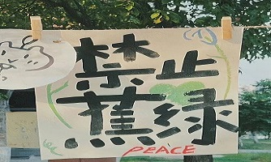
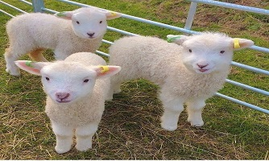

关于学习：
在学习方面，态度比较端正，认真学习专业知识，在注重 提高专业理论知识的提高（但是偶尔会摆烂(*^▽^*)）； 在工作情况方面，目前担任班级生活委员，积极参与班级建 设和团结同学；在参与社团方面，进入大学后我加入了学校的爱无声手 语社团；在思想道德方面，已经成为一名入党积极分子，积极拥护中国共产党的领导， 积极参加社会志愿活动，具有高度的社会责任意识和服务意识。
关于生活态度:
我生活态度乐观积极，偶尔emo，但想做一个始终热爱生活的“小孩‘’。 在数十年的求学之路中，我能以自己的真诚和乐观打动身边的许多人， 同时处理好身边的各种人际关系，这也使我收获了许多朋友。